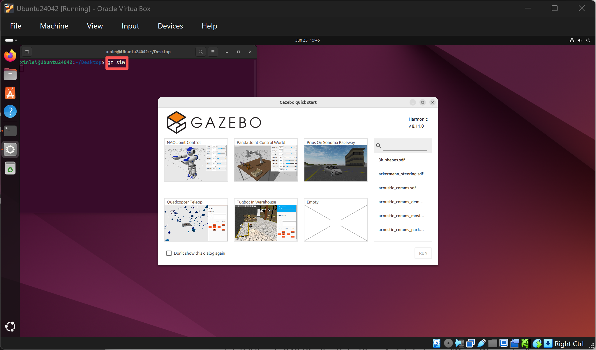
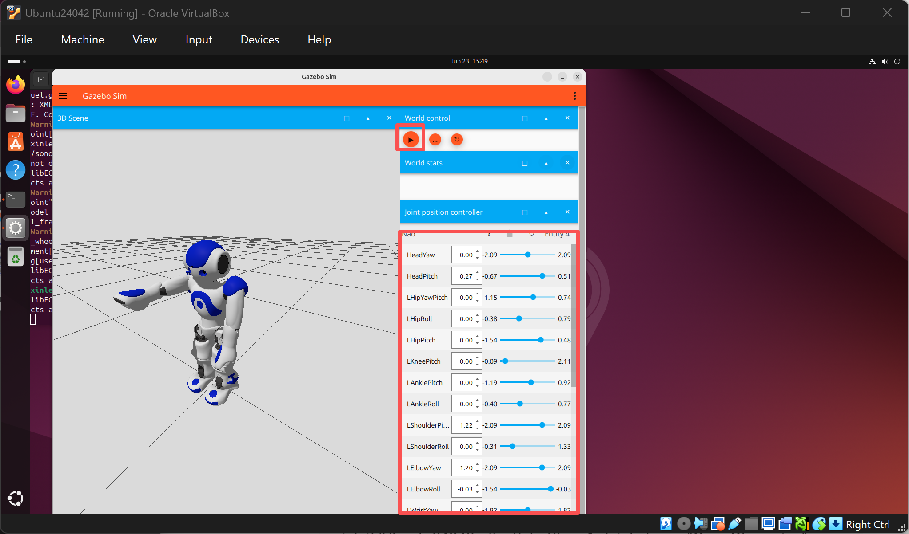
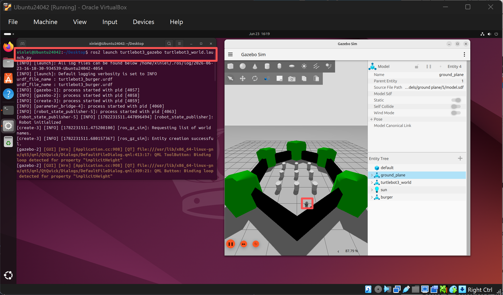
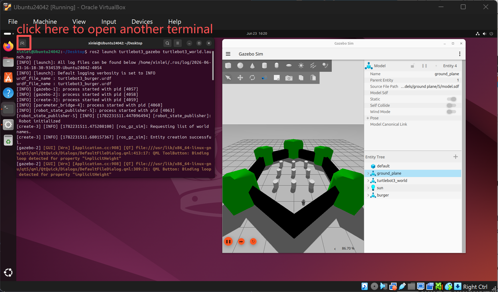
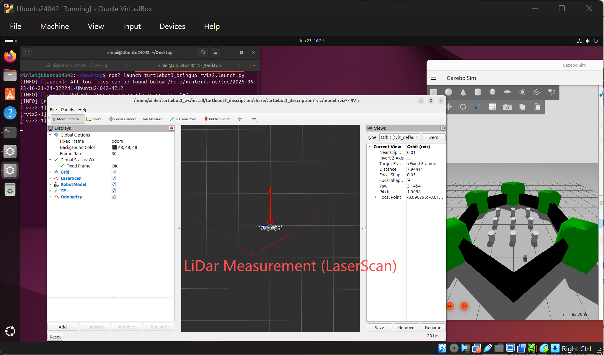
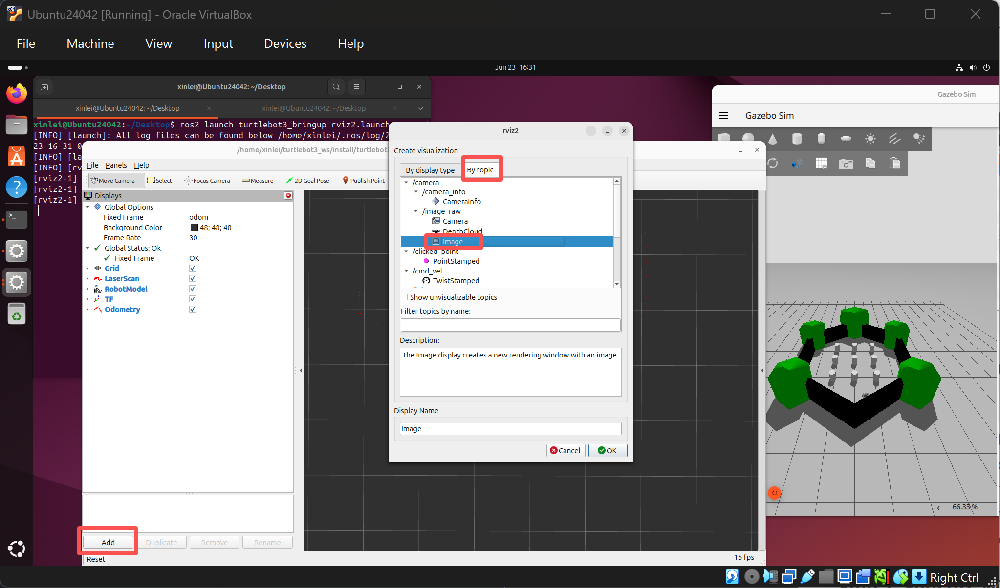
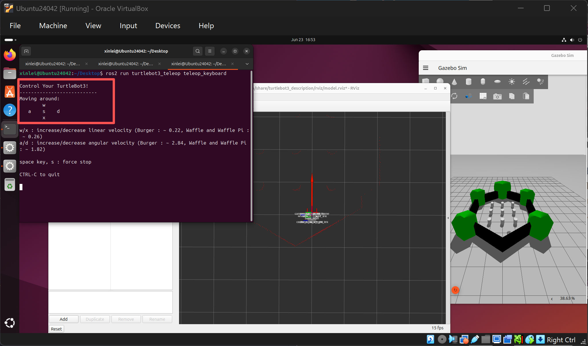

First Glance at Robotic Simulator
The following steps take approximately 30 minutes to complete.
Before proceeding, make sure you have completed the previous sections.
The following steps are adapted from the official Turtlebot3 documentation at https://emanual.robotis.com/docs/en/platform/turtlebot3/quick-start/#pc-setup. Refer to their website for more details.
Step 1: Install the Simulator and Configure the Environment
First, run the commands below to install the simulator.
$ sudo apt-get update
$ sudo apt-get install curl lsb-release gnupg
$ sudo curl https://packages.osrfoundation.org/gazebo.gpg --output /usr/share/keyrings/pkgs-osrf-archive-keyring.gpg
$ echo "deb [arch=$(dpkg --print-architecture) signed-by=/usr/share/keyrings/pkgs-osrf-archive-keyring.gpg] http://packages.osrfoundation.org/gazebo/ubuntu-stable $(lsb_release -cs) main" | sudo tee /etc/apt/sources.list.d/gazebo-stable.list > /dev/null
$ sudo apt-get update
$ sudo apt-get install gz-harmonic
$ sudo apt install ros-jazzy-cartographer
$ sudo apt install ros-jazzy-cartographer-ros
$ sudo apt install ros-jazzy-navigation2
$ sudo apt install ros-jazzy-nav2-bringupMake sure the installation above completes successfully. Then run the commands below to install some wrapper packages. This step takes approximately 8 minutes.
$ source /opt/ros/jazzy/setup.bash
$ mkdir -p ~/turtlebot3_ws/src
$ cd ~/turtlebot3_ws/src/
$ git clone -b jazzy https://github.com/ROBOTIS-GIT/DynamixelSDK.git
$ git clone -b jazzy https://github.com/ROBOTIS-GIT/turtlebot3_msgs.git
$ git clone -b jazzy https://github.com/ROBOTIS-GIT/turtlebot3.git
$ sudo apt install python3-colcon-common-extensions
$ cd ~/turtlebot3_ws
$ colcon build --symlink-install
$ echo 'source ~/turtlebot3_ws/install/setup.bash' >> ~/.bashrc
$ source ~/.bashrc
$ echo 'export ROS_DOMAIN_ID=30 #TURTLEBOT3' >> ~/.bashrc
$ echo 'export TURTLEBOT3_MODEL=waffle_pi' >> ~/.bashrc
$ echo 'export LIBGL_ALWAYS_SOFTWARE=1' >> ~/.bashrc
$ source ~/.bashrcLet's run a simple test to confirm the installation was successful. Run the command below.
$ which gz If the output is /opt/ros/jazzy/opt/gz_tools_vendor/bin/gz, which is the file path to the Gazebo simulator, the command was successful. Next, let's launch the Gazebo simulator for a further test. Run the command below in the terminal.
$ gz sim This command launches the Quick start window of the Gazebo simulator, as shown in the figure below.

Then, feel free to open any of the demo simulations that interest you, e.g., NAO Joint Control, shown in the figure below. Note that, depending on the hardware resources (e.g., memory size and number of CPU cores) you assign to the virtual machine, it may take tens of seconds to load the simulation world.

If the NAO simulation opens successfully, you have successfully installed the robotic simulator we need. As marked in the figure above, you can adjust the slider to set the desired joint positions of the NAO humanoid robot, then click the play button at the top to start the simulation; the NAO humanoid should move accordingly.
Step 2: Sensor Measurements — How Robots Perceive the World
Next, we will walk through some common sensors used on robots to perceive the environment.
Run the command below to launch the simulator. You should see the simulation environment shown in the figure below, where the mobile robot is marked; you can zoom in with your mouse.
$ ros2 launch turtlebot3_gazebo turtlebot3_world.launch.py
Next, open another terminal tab by clicking the button shown in the figure below. We need a second terminal because the first one is exclusively occupied running the command that launches and maintains the simulator. In this new terminal, we will launch a tool to visualize the robot's sensor measurements.

In the new terminal, run the command below to launch the visualization tool, as shown in the figure below. By default, the tool primarily displays the laser scan (dense red dots) from the robot's LiDAR sensor. Comparing it with the simulator on the right-hand side, you can roughly align the laser scan with the shape of the environment. Once you can align this information, you have grasped the core idea of SLAM — the robot localizes itself by aligning its sensor measurements (e.g., the laser scan) with the environment to determine where it is.
$ ros2 launch turtlebot3_bringup rviz2.launch.py
Moreover, modern robots are typically equipped with additional sensors, such as cameras. Follow the steps below to add camera measurements to the visualization tool. Images from the cameras are another source of information the robot can exploit to localize itself.

Step 3: Teleoperation
Turn off the simulator and the visualization tool by pressing Ctrl + C in each terminal running the corresponding command. Then wait a few seconds and re-run the commands above to reopen the simulator and the visualization tool. Reopening refreshes the simulation world, since running it for a long time consumes a significant portion of the machine's resources.
Next, let's teleoperate the robot in the simulator. Meanwhile, the visualization tool will update as the robot moves. Open another terminal and run the command below.
$ ros2 run turtlebot3_teleop teleop_keyboardWhen you see the terminal output shown in the figure below, you can begin teleoperating the robot using the on-screen instructions.

If the robot moves according to your teleoperation commands, congratulations! If it does not, your personal computer may not be powerful enough to run this physics-based simulator. Try rebooting the virtual machine and attempting again.